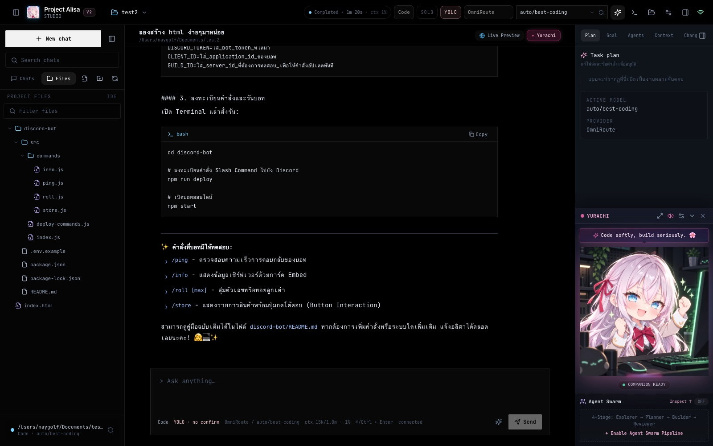
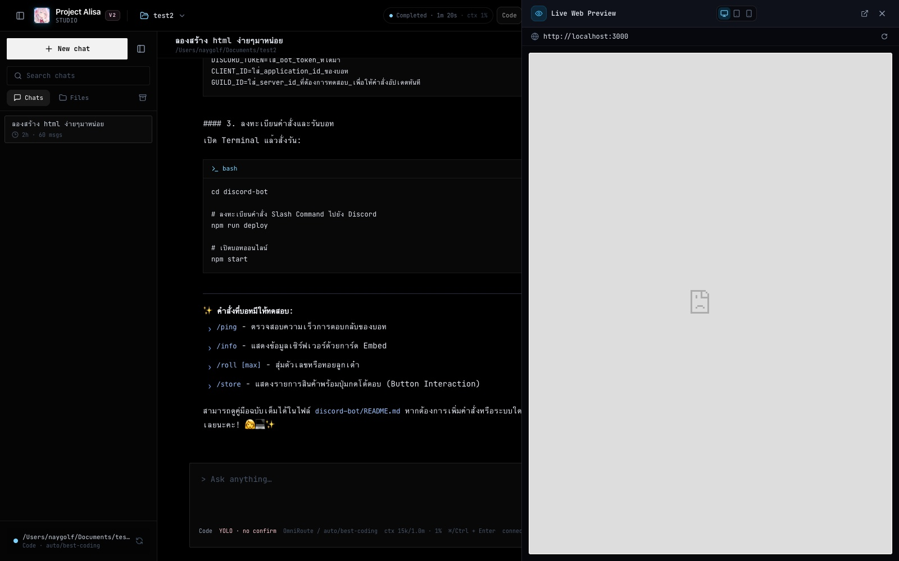
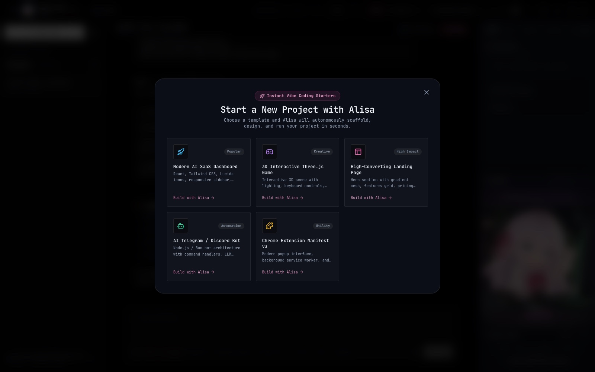
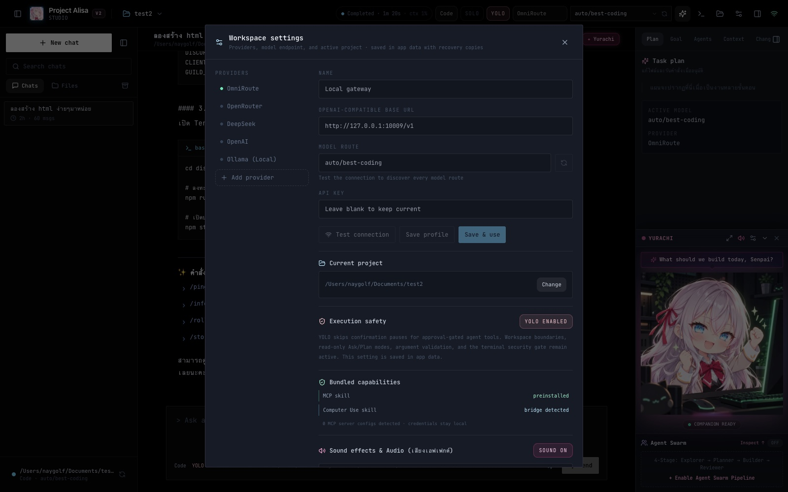
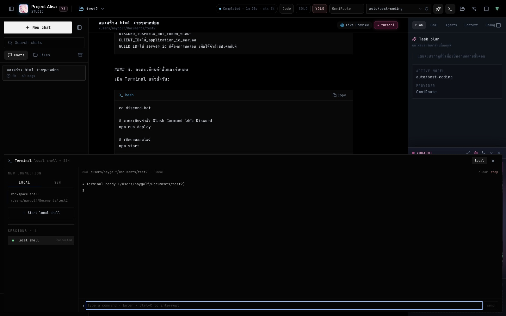

สภาพแวดล้อมเขียนโค้ด AI บน Desktop ยุคใหม่ ผสาน Agent Swarm 4 บทบาท (Explorer, Planner, Builder, Reviewer) เข้ากับคู่หูอนิเมะ Yurachi ตอบสนองแบบ Real-time สร้างบน Tauri v2 + Bun เร็วจัด เบาเครื่อง และระบบสตรีมที่ไม่เคยค้าง
สัมผัสประสบการณ์ทำงานจริงใน Project Alisa Studio V2 ที่ออกแบบมาเพื่อคนทำงานระดับโปร
ยูราจิและแถบกระบวนการทำงานแบบ Swarm 4 บทบาทถูกย้ายมาติดไว้ที่ส่วนล่างของเมนูด้านขวาอย่างเป็นระเบียบ ไม่บดบังพื้นที่แชทหรือไฟล์โค้ด พร้อมคำพูดทักทายและคำแนะนำตามงานจริง

เปิดดูโครงสร้างไดเรกทอรี ไฟล์ซอร์สโค้ด และการเปลี่ยนแปลงในโปรเจกต์ได้โดยตรง พร้อมระบบค้นหาไฟล์และกรองไฟล์ความเร็วสูง

ดูผลลัพธ์ของเว็บแอปพลิเคชันที่คุณสั่งให้ AI สร้างได้โดยตรงในตัวโปรแกรม ไม่ต้องสลับหน้าต่างไปที่ Chrome หรือ Safari

เริ่มโปรเจกต์ใหม่ได้ในเสี้ยววินาทีด้วยเทมเพลตมาตรฐานสากล พร้อม Prompt เชิงสถาปัตยกรรมที่คัดสรรมาอย่างประณีต

ควบคุมสภาพแวดล้อมได้เบ็ดเสร็จ: สลับผู้ให้บริการโมเดล AI (OmniRoute, OpenRouter, DeepSeek, OpenAI, Local Ollama), ตั้งค่า YOLO Execution Safety และปรับระดับเสียงเอฟเฟกต์

เทอร์มินัลจริงที่เชื่อมต่อกับ PTY ของระบบโดยตรง รันคำสั่ง Bash / Zsh / PowerShell ได้เต็มประสิทธิภาพ พร้อมรองรับ Session แยกระหว่าง Local และ SSH
สร้างบนพื้นฐานเทคโนโลยีที่ทันสมัยที่สุด ไร้ความเทอะทะของ Electron
แกนหลักของเดสก์ท็อปแอปเขียนด้วยภาษา Rust กินหน่วยความจำน้อยกว่า Electron ถึง 4 เท่า สตาร์ทโปรแกรมไว และมีความปลอดภัยสูง
เซิร์ฟเวอร์แบ็กเอนด์เฉพาะที่รันบน Bun Runtime จัดการ WebSocket, การอ่านเขียนไฟล์ และการรัน Shell PTY Terminal ด้วยความเร็วระดับ C++
เกตเวย์เชื่อมต่อโมเดล LLM พร้อม Inactivity Watchdog 25 วินาที และ Smart Exponential Backoff หมดปัญหาแอปค้างหรือนิ่งไปเฉยๆ
ระบบเสียงเอฟเฟกต์สังเคราะห์ความถี่เสียงด้วยโค้ด Pure Web Audio API ทำงานออฟไลน์ 100% โดยไม่ต้องโหลดไฟล์ mp3 หรือ wav ภายนอก
เราเชื่อในความโปร่งใส นี่คือสิ่งที่คุณควรรู้ก่อนใช้งานจริง
อย่าใช้โมเดลใหญ่ตัวเดียวกับทุกงาน! สำหรับงานค้นหา แก้ไขไฟล์ทั่วไป แนะนำ Gemini 2.5 Flash (เร็วมากและประหยัดสุดๆ) ส่วนงานที่ต้องคิดโครงสร้างซับซ้อนให้ใช้ Claude 3.5 Sonnet หรือ DeepSeek R1 สำหรับงานตรรกะคณิตศาสตร์
#OmniRoute #ModelTierListตัวแอป Alisa ใช้ RAM เพียง 150-300MB เท่านั้น แต่เนื่องจากต้องรันโปรเจกต์ของคุณเอง (เช่น node_modules, vite dev server, compiler) จึงแนะนำให้มี RAM ขั้นต่ำ 8GB และแนะนำ 16GB สำหรับการรันหลายโปรเจกต์พร้อมกัน
#HardwareRequirementsเนื่องจาก Alisa Studio เป็นโปรเจกต์โอเพนซอร์สฟรี เราไม่ได้จ่ายค่าธรรมเนียม $99/ปี ให้ Apple หรือ $400/ปี ให้ Microsoft สำหรับใบรับรององค์กร ทำให้ macOS อาจขึ้นเตือน "Unidentified Developer" (กดคลิกขวา > Open ได้เลย) และ Windows อาจขึ้น "SmartScreen" (กด More info > Run anyway) มั่นใจได้ว่าโค้ดทั้งหมดเปิดเผยและปลอดภัย 100%
#Gatekeeper #SmartScreenถ้าคุณต้องการนั่งเคาะพิมพ์โค้ดเองทีละบรรทัด VSCode อาจตอบโจทย์กว่า แต่ถ้าคุณต้องการ Autonomous Flow ที่คุณสั่งงานเป้าหมายระดับสูง แล้วปล่อยให้ Agent Swarm คิด วางแผน แก้ไข รันเทอร์มินัล และรีวิวให้เบ็ดเสร็จ Alisa Studio จะช่วยประหยัดเวลาของคุณได้มหาศาล
#AutonomousAgentความคืบหน้าของสิ่งที่เราทำเสร็จแล้ว และทิศทางในอนาคต
Project Alisa Studio พัฒนาขึ้นด้วยความตั้งใจที่จะมอบเครื่องมือเขียนโค้ดอัตโนมัติที่ดีที่สุดให้แก่นักพัฒนาทุกคนโดยไม่มีค่าใช้จ่าย คุณสามารถร่วมสนับสนุนผู้พัฒนาได้โดยตรงผ่าน Donate Website เพื่อเป็นกำลังใจในการพัฒนาฟีเจอร์ใหม่ๆ
รวมทุกข้อสงสัยเกี่ยวกับการติดตั้งและการใช้งาน